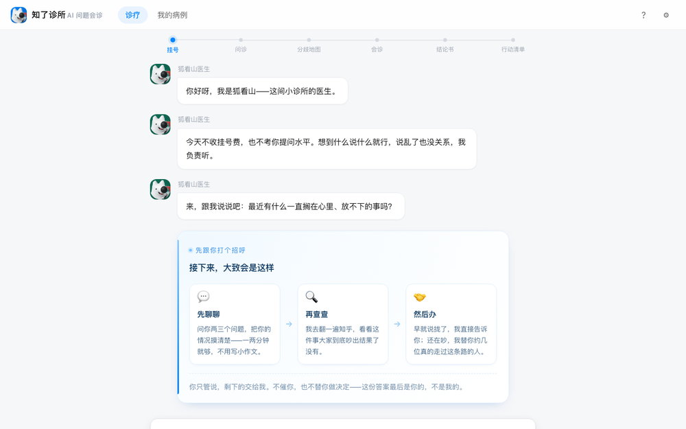

把一个人的困惑当作一例病例，由 AI 组织一次真实的会诊：先读真实的知乎讨论， 检测大家到底在哪儿吵不拢；再把几位真的走过这条路的人请到一张桌子上。 最后产出一份公开的《会诊结论书》和一份私密的《行动清单》。

这是一个可交互的网页应用，完整流程需要 JavaScript。 你看到这一页，说明当前环境没有执行脚本（预览工具 / 命令行抓取 / 浏览器禁用了 JS）。 请用浏览器打开本地址：把当前网址复制到浏览器里访问， 并在网址后加上 ?demo=1，即可看到自动演示的完整会诊流程。
正在打开知了诊所…
如果长时间没有反应，请确认你是双击打开的，而不是拖进了编辑器。